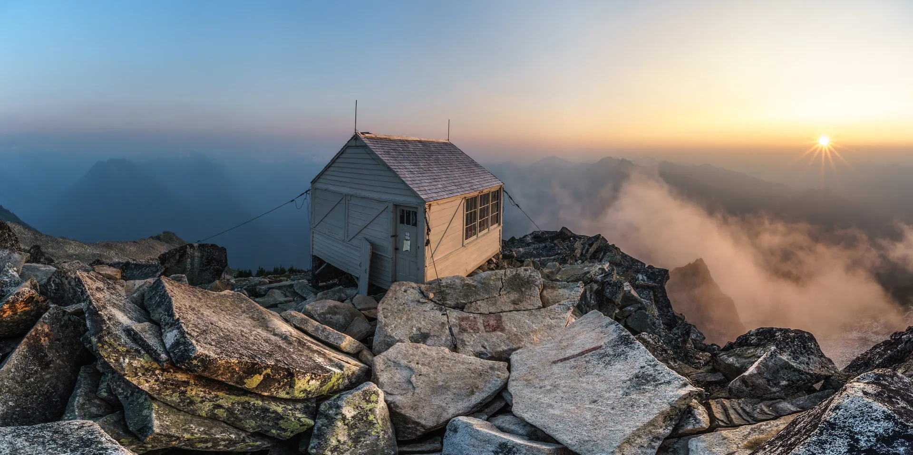
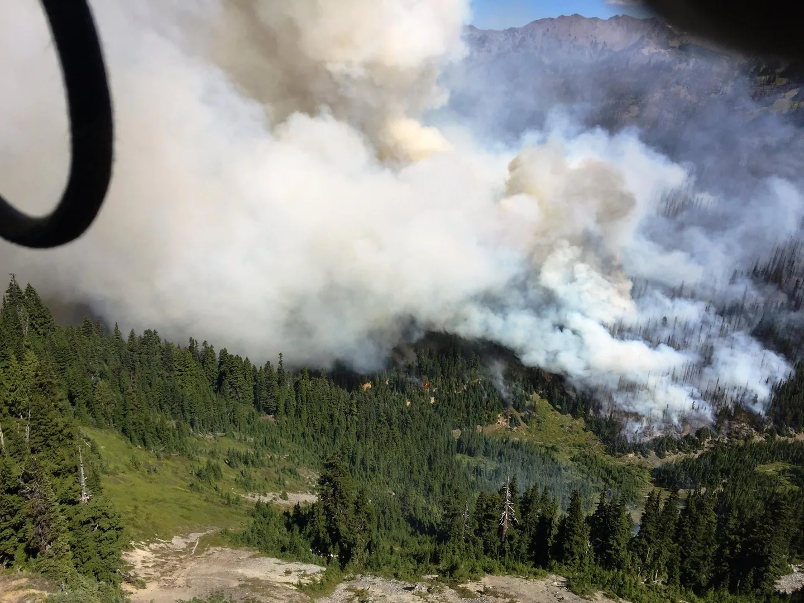

Wildfire smoke research
A clearer view of
wildfire smoke.
Serein is a student research project testing local smoke forecasts up to three days ahead and exploring how families could use them to plan.
Explore the projectThe problem
Smoke crosses a region. Exposure varies locally.
When smoke arrives, families need to decide what tomorrow looks like. Regional forecasts can miss differences between places, even within the same metro area.
SmokeCast tests whether recent air monitor readings can improve those forecasts. AirPlan explores how to present the result to families with children who have asthma.

The project
From a forecast to a family decision.


Historical development results
How well did it do?
On paired next-day forecasts in 2023, SmokeCast had lower forecast error than the AQM-first fallback. The reserved 2024–25 evaluation is still pending.
See the model comparisons- SmokeCast
- 7.9
- AQM-first fallback
- 11.0
Next-day RMSE in µg/m³. Lower is better.
Project status
What comes next.
Forecast evaluation
The team plans to rerun development experiments with the revised pipeline, then freeze the protocol before scoring the reserved seasons.
Family research
AirPlan uses simulated symptom histories. Real-family research would require consent and clinical review.